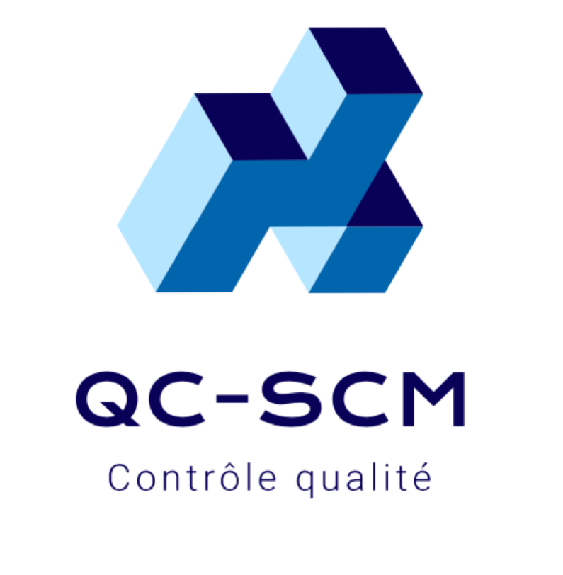

<ion-header >
  <ion-toolbar>

    
    <ion-title>
      QC-SCM
    </ion-title>
    <ion-icon (click)="logout()" size="large" slot="end" name="log-out-outline"></ion-icon>&nbsp;

  </ion-toolbar>
</ion-header>

<ion-content [fullscreen]="true">
 <h2> Bienvenue {{username}}</h2>
  
  

    <ion-list>
   
        <ion-item (click)="createQc()">
          <ion-icon slot="start" name="document-outline"></ion-icon>
          <ion-label>Crée un QC</ion-label>
          <ion-icon slot="end" name="chevron-forward-outline"></ion-icon>
        </ion-item>

        <ion-item (click)="seeQc()">
          <ion-icon slot="start" name="library-outline"></ion-icon>
          <ion-label>Voir un QC</ion-label>
          <ion-icon slot="end" name="chevron-forward-outline"></ion-icon>
        </ion-item>

        <ion-item (click)="modifyTempaltes()">
          <ion-icon slot="start" name="file-tray-full-outline"></ion-icon>
          <ion-label>Gestion des templates</ion-label>
          <ion-icon slot="end" name="chevron-forward-outline"></ion-icon>
        </ion-item>

        <ion-item (click)="modifyControles()">
          <ion-icon slot="start" name="eye-outline"></ion-icon>
          <ion-label>Gestion des controles</ion-label>
          <ion-icon slot="end" name="chevron-forward-outline"></ion-icon>
        </ion-item>
        
    </ion-list>


</ion-content>
